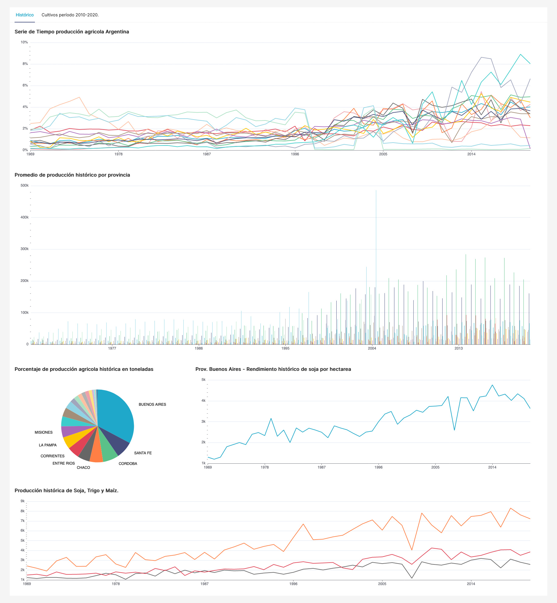
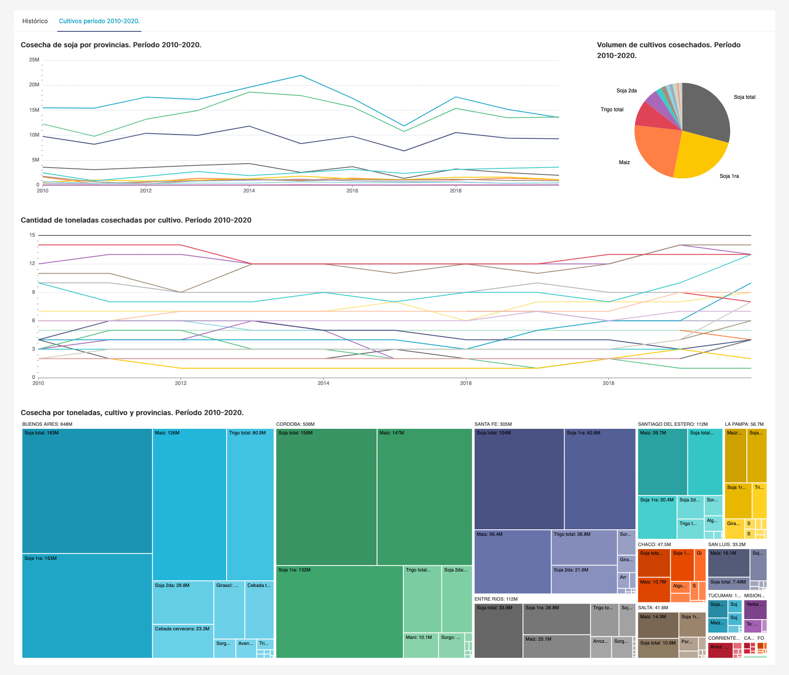

Datos
Los datos corresponden a
The ExtraSensory Dataset
- A dataset for behavioral context recognition in-the-wild from mobile sensors.
Contiene data de 30 usuarios (originalmente 60, pero seccionado para fines de este trabajo), cada uno identificado con un ID único.
Para cada usuario se tienen miles de ejemplos, típicamente registrados en intérvalos de 1 minuto (pueden existir períodos faltantes).
Cada ejemplo registrado contiene medidas de sensores del teléfono y/o reloj inteligente, y la mayoría también contiene labels (etiquetas)
reportadas por el mismo usuario.
Levantar el ambiente de Docket Compose
-
En VSCode abrir una terminal de batch (WSL) y clonar el repositorio mediante
'git pull https://github.com/LeyRamos/humanactivity.git main'
-
Iniciar la aplicación de Docket Desktop
-
En la terminal, iniciar el ambiente mediante el comando ./'control-env.sh start'
-
Abrir 'https://localhost' en un navegador web.
Funciones disponibles en el ambiente
- './control-env.sh start'
- './control-env.sh stop'
- './control-env.sh cleanup'
- './control-env.sh update'
- './control-env.sh token'
- './control-env.sh info'
- './control-env.sh superset-init'
- './control-env.sh superset-ip'
- './control-env.sh superset-import'
- './control-env.sh superset-stop'
Análisis y visualización de Datos
-
Abrir la lista de Jupyter Notebooks.
Es necesario ingreasr el token que se obtienen mediente el comando en la terminat batch:
./'control-env.sh token'
-
Ejecutar el notebook HumanActivity_ETL
para importar los datos, aplicar transformaciones y guardar en la base de datos de Postgres.
-
Ejecutar el notebook HumanActivity_DW
para usar los datos directamente de la base de datos de Postgres y generar agregaciones para visualización de datos.
-
En la terminal, ejecutar './control-env.sh superset-init' para inicializar Superset.
-
Ingresar a la aplicación Superset.
Usar el usuario 'ha_super_admin' y Password: 'hnm4/4c71v1tY',
o crear uno nuevo mediante el comando ./'control-env.sh superset-init'
-
Importar el dashboard creado desde el entorno docker /home/superset/dashboards mediante ./control-env.sh superset-import en la terminal.
-
Acceder al Dashboard de Actividades Humanas
Nota: En caso de que la base de datos se desconecte, ingresar a las bases de datos,
seleccionar la opción de Data > '+ Database' > PostgresSQL y completar:
Host: Se optiene mediante el comando './control-env.sh superset-ip'
Port: 5432
Database name: ha_db
User: ha_user
Password: hnm4/4c71v1tY
Display name: ha_dataset
Cerrar el ambiente
Una vez ejecutado todo el sistema se recomienda:
-
Terminar los procesos del ambiente y todos sus containers mediante ./control-env.sh stop
-
Limpiar los datos de los volúmenes con ./control-env.sh cleanup
Screens dashboard


Leydi Ramos